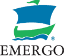
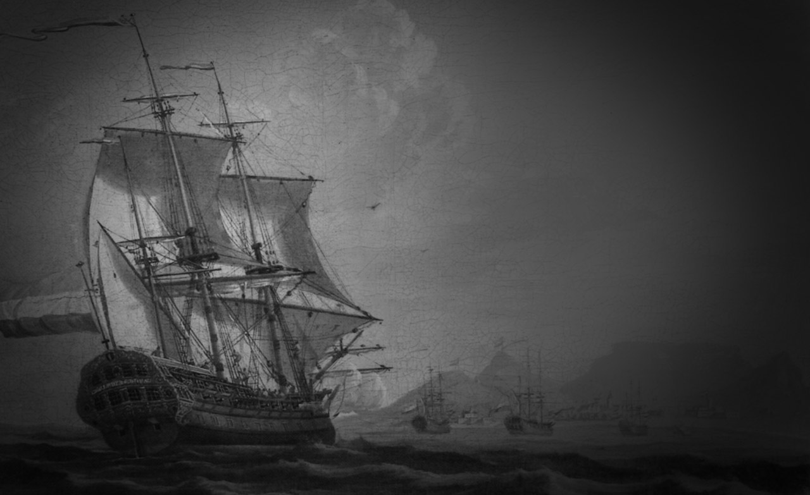
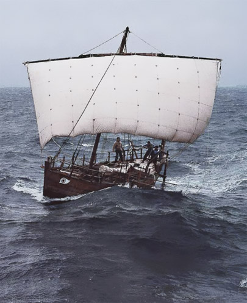
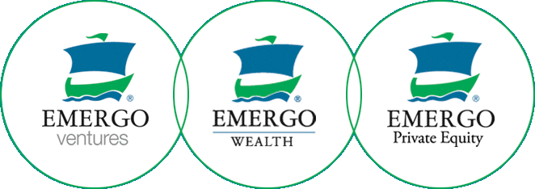

Commerce today occurs in an infinitely more complex world. Yet, with all the changes that have occurred, the challenges that faced the ancient seatraders, challenges of unstable vessels, treacherous seas and uncommon weather, have really only been replaced by new variations. In today's world we still deal with limitations of technology, turbulent markets and political change. The world of commerce is sometimes calm, often turbulent, filled with unknowns. Like the sea. And like the seafarers of old, modern traders continue to push back the boundaries of our world, defining new ways of doing business, new trading partnerships, new opportunities.

For hundreds of years, the sea was the conduit of trade, and trade was the access to power. Seafaring traders shuttled across the warm seas carrying goods to the world, the world as they knew it. As early a 300 B.C., Greek traders loaded specially designed trading ships like the Kyrenia with almonds, millstones and amphorae of wine to trade in far off Alasia, an early name for Cyprus.
Several hundred years later, the sea gave its power to the Dutch, who became the world's leading traders. In the early 1600s, this nation and its venturers commanded the sea trading routes, supplying close to half the world's shipping. Expanding trade made Amsterdam the world's major commercial city, and the Dutch enjoyed the world's highest standard of living. These early Dutch explorers discovered new sea routes and fishing grounds. They pushed back the boundaries of the world, expanding the horizon beyond what anyone had known or imagined up to that time. They introduced exotic silks, pungent teas and spices that the world of Europe had never seen before.
As the world became more complex, so did the routes of trade. Today goods still move along trading routes by land, by water, by air, even digitally. Yet the symbol of the sea remains, as a channel of commerce, a highway of trade reaching places and people beyond the horizons we can see.
At Emergo, we believe the spirit of opportunity still drives people to venture into new territory, to explore the boundaries of our world as we know it. Like the mariner in the days of Alexander the Great, or the climber moving towards the top of Mount Everest, or the engineer defining new possibilities for technology, there are adventurers who cannot stop from venturing.
These people share a curiosity, a determination to find a new way, and a courage in overcoming fear of what is now unknown. They share an ability to understand change, to apply what they know, and to learn. These are the people that form Emergo today. They are the modern seafarers, explorers who see the world in all its opportunity. Their exploration will be what Emergo becomes as we venture forward.
Early venturers were carried into the unknown, to discover new riches and opportunities for commerce, in ships such as the Kyrenia. This vessel was solid, efficient and, for its time, incorporated many innovations in its construction. It is the oldest seagoing vessel ever found and remains a symbol of man's earliest venturings upon the sea. We chose the Kyrenia Ship as the symbol for our company as we venture forward into the future.

Replica of the Kyrenia ship on her maiden voyage.
Photo coutesy of Harry E. Tzalas.
“There lies the port; the vessel puffs her sail: There gloom the dark, broad seas, my mariners, souls that have toiled, and wrought and thought with me.
Come my friends, ‘tis not too late to seek a newer world. Push off, and sitting well in order smite the sounding furrows; for my purpose holds the open sea to sail beyond the sunset, and the baths of all the Western stars, until I die...
That which we are, we are: One equal temper of heroic hearts, made weak by time and fate, but strong in will to strive, to seek, to find, and not to yield.”
Alfred, Lord Tennyson
Oxford defines opportunity as a time or condition favorable for a particular action or aim. An early proverb states that opportunity never knocks twice at any man's door. In the Chinese lexicon, the word opportunity is paired with the word threat to become the word meaning change. At Emergo, we believe that opportunity is presented in a world full of change, such as we are living in today. We believe the time is right for companies willing and able to take on opportunity, and meet it wherever in the world it can be found.
As companies, as people, we reach out to all parts of the globe today to trade, to talk, to touch. Our world has become steadily smaller as our understanding and vision of the globe expands. It is not accidental that Emergo, with its Dutch heritage and the Kyrenia as its symbol, operates in countries around the globe. For companies like Emergo, the horizons are no longer geographic. Today, Emergo and its peers are exploring the boundaries of human and technical possibilities in all parts of the world where opportunity can be found.
The ability to see the world differently; to see opportunity where others see threats, or nothing at all. This is the essential quality of innovation. Innovation is the leap of understanding that transforms new ideas into new opportunities. It is the ability to anticipate the way the world is moving and create companies of people capable of capturing these opportunities. It is the practice of a new and better way, and in a world as dynamic as ours is becoming, innovation is a necessary characteristic for those wanting to stay at the leading edge.
""I want to take the calculated risk, to dream and to build, to fail and to succeed… It is my heritage to stand erect, proud and unafraid; to think and act for myself, to enjoy the benefit of my creations and to face the world boldly and say: This, with God's help I have done. All this is what it means to be an entrepreneur." - Excerpt from the "Entrepreneurs Credo"
Passion is as essential to quality of life for companies as it is for individuals. Yet volumes have been written about impassioned people, and little has been said about the impassioned company. For companies, passion is the how, the adjective, the way they do what they do. Impassioned companies pursue their visions, relentlessly. They talk to their people, inspirationally. They complete each task, perfectly. These are thinking and feeling organizations, places where the results of a fine mind are made better by the institution of a great heart.
Companies such as Emergo have a uniquely long-term perspective on their business. They tend to see the world as opportunities spanning many decades. For Emergo, strategic planning looks well beyond the three - or five - year perspective. Emergo is looking at opportunities that may not reach fruition for several decades. Yet the planning, the positioning, the strategizing is happening now.
The soothsayers of yesterday have become the futurists of today, turning alchemy into a management science of extending today's business trends into tomorrow's opportunities. This process is not to be scorned, however. The demise of many twentieth century companies has been the inability, or unwillingness, to anticipate significant shifts in market trends. Today it is a critical corporate attribute to be able to identify trends in a market or industry, anticipate changes in demand, predict new opportunities and then, most important, capitalize on those opportunities. The companies capable of doing this are called visionary. Like the ancient soothsayers, visionary companies are often regarded with a degree of awe and suspicion, earning their respect and success as the rest of the world catches up.
There is a skill that belongs to artisans and athletes that isn't learned or trained. You can see it in the natural grace of their efforts, the intensity of their focus, the innate understanding of how to complete what they started. These kinds of people seem drawn to their tasks, as if they understand instinctively what they are good at doing. They have a knowledge and confidence in what they know they can do. It is this kind of native resourcefulness that you find in the work of a laborer who can repair any piece of equipment, or an engineer inventing new technical solutions. In companies, this kind of resourcefulness is both an attitude and a skill. It is the attitude that says anything is possible, and the skill to make it happen.
*Emergo is a registered trademark
Our investment approach differs based on the type and size of the investment opportunity under consideration. Start-ups and early stage companies are evaluated and, if they pass our hurdles, sponsored by our venture group. More mature investments, are first evaluated for the impact the target may have on our overall investment portfolio and if the fit matches our desired risk/return profile, a detailed due diligence is performed by our equity group. If successful, the asset is added to our portfolio and monitored closely, mostly through Board participation.
Emergo Wealth is a licensed investment firm with capabilities to assist the Emergo group and its holdings in various financial matters. From investment advice to acquisition and divestment support, Emergo Wealth executives have the expertise and the experience to add value every step of the way.

Corporate presence is much more than bricks and mortar. The impact a company creates is a function of the stamp it puts on everything, from the corporate logo to the office furnishings to its communication material. These are companies that understand who they are, what they stand for, where they are headed, and they are very deliberate in how they tell that story. We look for companies with these characteristics and which operate in industries that have a strong or improving future.
We currently have and/or pursue investments in the following sectors:
Venture Capital; Biotechnology; Construction; Engineering and Data Service Solutions; Data Design Capture, Integration, Conversion, Management, Maintenance and Delivery; Oil and Gas Exploration and Development; Oil and Gas services; Management Services; Project Management and Implementation; Health care, Medical Devices, Pharmaceuticals, Nutraceuticals; Real Estate; Manufacturing; Retailing.
Emergo typically makes its investments through industry specific subsidiaries such as Emergomed® and Emergo Energy®. Through these subsidiaries, Emergo can provide a range of expertise, support, assistance and services to companies, giving consideration to a variety of factors such as the entity's business strategy, its needs, and its opportunities and risks within its particular industry and sector. We can tailor our assistance to the specific entity, depending on the size, scale and scope of the business, the depth and experience of its management team, its financial circumstances, and its capability to execute and implement change.
“I want to take the calculated risk, to dream and to build, to fail and to succeed. ...It is my heritage to stand erect, proud and unafraid; to think and act for myself, to enjoy the benefit of my creations and to face the world boldly and say: This, with God’s help I have done.
Excerpt from the Entrepreneur’s credo by Thomas Paine
All this is what it means to be an entrepreneur.”
In order to qualify for consideration to join the Emergo group, companies must present much more than mere opportunities for a reasonable return on capital. Our investments are in those unique companies that display congruence with our corporate vision and values. These companies present strategic opportunities for Emergo, and are global in scope and potential. They are driven by highly creative, innovative, entrepreneurial, and passionate people.